Microwave Magnonics Lab, Chungbuk National University
Making waves in magnets
Spin waves, or magnons, are ripples in the magnetization of a material. They can carry information without moving any electric charge. We study how they talk to sound, microwaves and superconducting circuits, and how to build useful devices from them.
Try it: hover near the spins to pull on them, or click to pluck them and watch the waves bounce off the ends.
What's new
All news-
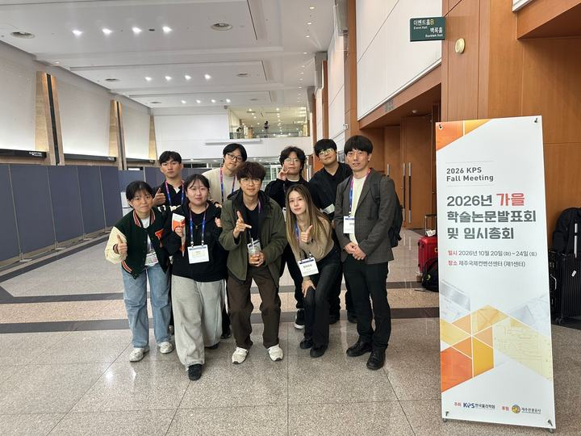
Two undergraduate teams at the KPS Fall Meeting
Our students presented two projects in the undergraduate research competition in Jeju.
-
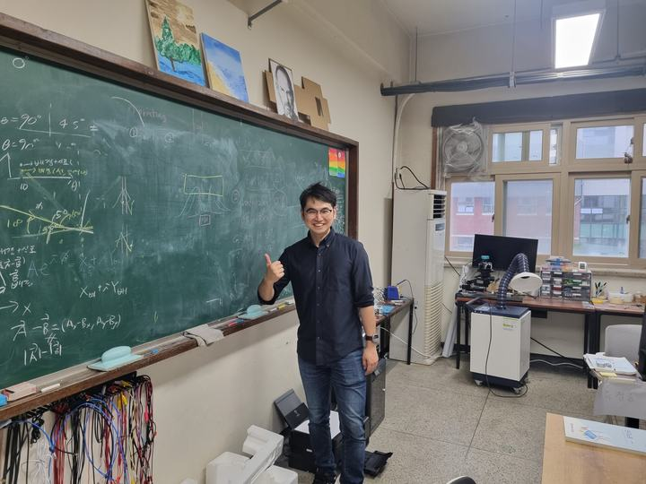
Ryuhei Kohno visits from Tohoku University
A longtime collaborator from our SPINTEC days came to see the lab.
-
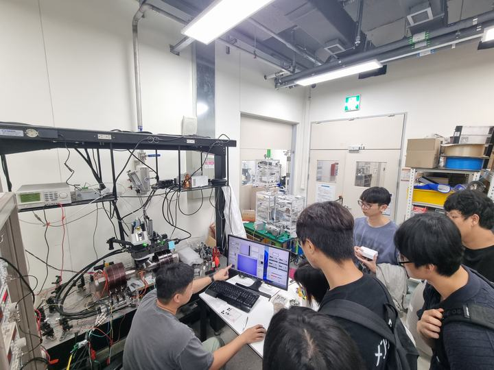
Our summer internship
Three months of hands-on experiments, Friday seminars and a visit to KRISS.
What we do
Magnons, the quanta of spin waves, carry information at gigahertz frequencies without moving electric charge. Their frequency tunes with a magnetic field, and they couple strongly to lattice vibrations (phonons) and to microwave photons.
Most of our work happens where these three meet. We use phonons to couple magnets that are far apart, connect magnons to superconducting circuits to pass quantum information between platforms, and use nonlinear spin waves for signal processing.
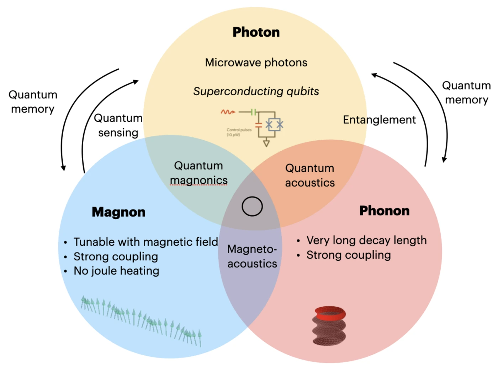
-
Magnon–phonon coupling
In magnetic garnets, magnons and sound waves (phonons) mix strongly. We use phonons to carry angular momentum coherently between magnets that are far apart, and to make two magnets behave as one coupled system with bright and dark states.
-
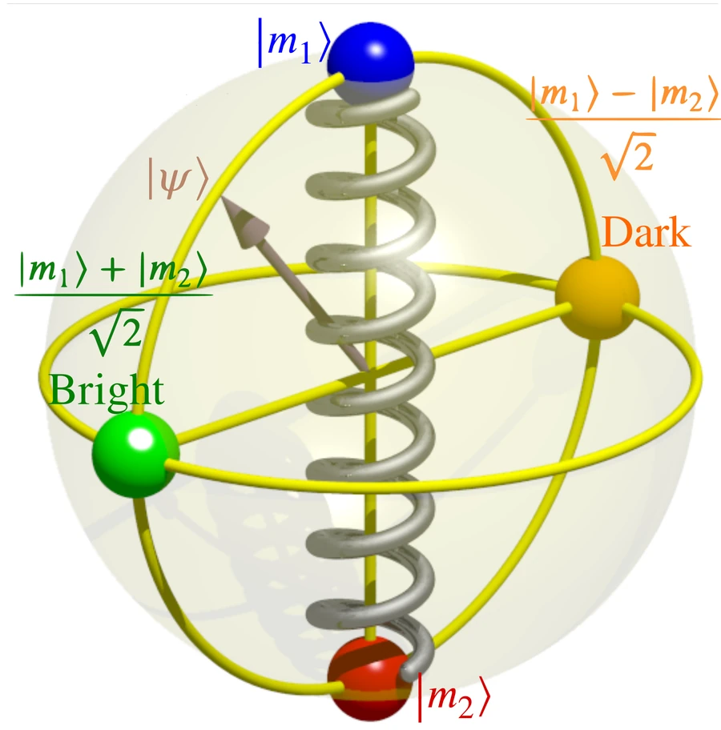
Quantum magnonics
Magnons also couple to microwave photons and superconducting qubits, which makes them good candidates for quantum transducers and sensors. In our Open-Lab project we are building a cryogenic setup where magnons meet superconducting circuits, including experiments on squeezed magnon states.
-
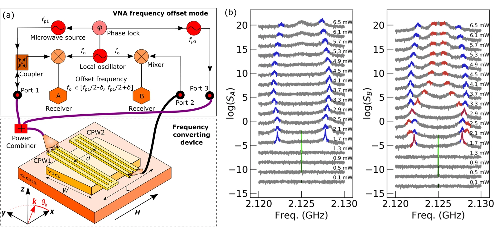
Spin-wave signal processing
Spin waves carry signals without charge currents, and when they get strong they start to interact, which can be used for logic and brain-inspired computing. We look at these nonlinear effects with very fine frequency resolution and design antennas that send spin waves one way but not the other.
-
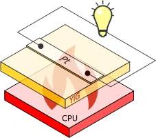
Spin caloritronics
Heat travels through magnetic insulators as both magnons and phonons. We measure how the two fall out of step and how hot magnons spread, as groundwork for energy-efficient spin devices.
Projects
-
Magnon–superconductor quantum transduction
Our main project. We are building an open lab in the Chungcheong region where magnons meet superconducting circuits, with the goal of passing quantum information between microwave platforms.
-
Sejong Science Fellowship
Where this line of research started, at KRISS: quantum-like magnon dynamics and spin–phonon interactions in engineered phononic structures.
We also take part in CBNU's ITRC program on magnon-based quantum sensing.
Inside the lab
We moved into an empty room in 2025 and have been filling it with experiments ever since. Here is what we can do so far.
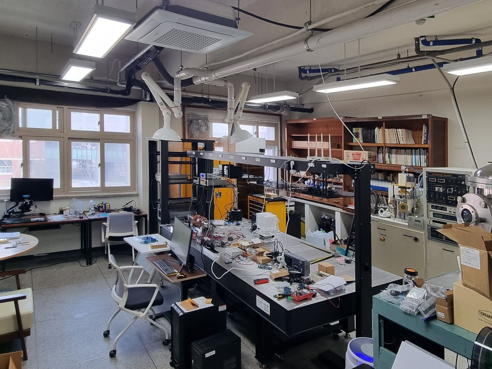
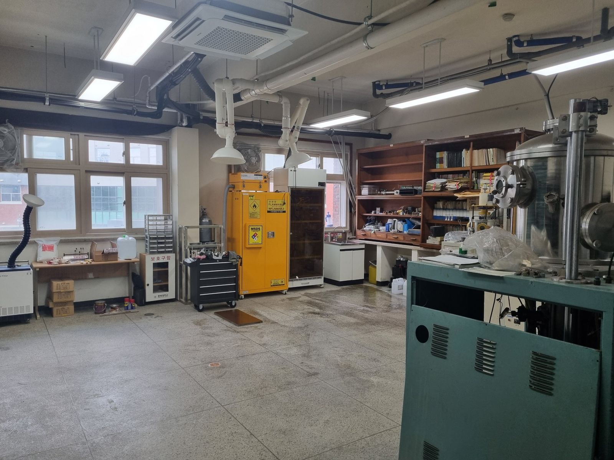
- Microwave measurements
- Ferromagnetic resonance and spin-wave transmission, with RF sources and spectrum analysers.
- Lock-in detection
- For picking out small signals from noise.
- Magneto-optics
- A laser-based magneto-optical Kerr effect (MOKE) setup on the optical table.
- Magnetic fields
- Electromagnets with a rotation stage we control with our own Arduino electronics.
- Spin-wave antennas
- Microwave antennas we design and make ourselves, including 1 mm and 0.5 mm versions.
- Simulation
- Micromagnetic simulations and field calculations for designing antennas and devices.
How it came together
Moving day: our optical table arrives by crane. The optical table in place, waiting for its first experiment. The first electronics on the table. Instrument racks and measurement stations go in. Antenna for Damon–Eshbach spin-wave propagation. Building the MOKE setup on the optical table. In-house Arduino control of the rotation stage. Racks full, benches busy: the lab this summer. A sample on a custom antenna, ready to measure. MOKE optics up and running.
Publications
Work from our group, and from Kyongmo's earlier years at UT Austin, EPFL, SPINTEC and KRISS.
A few favourites
-
Nature Communications15, 7302 (2024)
Emergent coherent modes in nonlinear magnonic waveguides detected at ultrahigh frequency resolution
Nonlinear magnonic waveguides develop coherent modes, resolved at ultrahigh frequency resolution.
-
Physical Review Applied20, 014046 (2023)
Optimizing the magnon-phonon cooperativity in planar geometries
How to maximize magnon–phonon cooperativity in planar device geometries.
-
Physical Review X12, 011060 (2022)
Bright and dark states of two distant macrospins strongly coupled by phonons
Two distant magnets couple strongly through phonons, forming bright and dark collective states.
-
Physical Review B101, 060407(R) (2020)
Coherent long-range transfer of angular momentum between magnon Kittel modes by phonons
Phonons carry angular momentum coherently between two magnets over long distances.
-
Physical Review Applied11, 034065 (2019)
Optimization of spin-wave propagation with enhanced group velocities by exchange-coupled ferrimagnet-ferromagnet bilayers
Exchange-coupled ferrimagnet–ferromagnet bilayers raise spin-wave group velocities.
-
Physical Review Letters117, 107202 (2016)
Magnons and phonons optically driven out of local equilibrium in a magnetic insulator
Light drives magnons and phonons out of local equilibrium in a magnetic insulator.
All publications
2026
-
Time-gating of coherent spin-wave echoes from edge reflections in micro-patterned YIG
Submitted (2026)
-
Chiral acoustic phonon and conservation of pseudoangular momentum in α-quartz
Adv. Mater. 38, e11289 (2026)
-
Optimizing spin-wave nonreciprocity via antenna-field design
J. Korean Phys. Soc. 88, 1094 (2026)
-
Dynamic X-ray magnetic circular dichroism of yttrium iron garnet
Current Applied Physics 81, 1 (2026)
2025
-
ACS Nano 19, 39747 (2025)
-
Giant modulation of magnetoresistance in a van der Waals magnet by in-plane current injection
Adv. Mater. 37, 2414917 (2025)
2024
-
Emergent coherent modes in nonlinear magnonic waveguides detected at ultrahigh frequency resolution
Nature Communications 15, 7302 (2024)
-
Programmable racetrack for magnetic domain wall motion via local tuning of exchange biased field
Adv. Electron. Mater. 10, 2400027 (2024)
2023
-
Optimizing the magnon-phonon cooperativity in planar geometries
Phys. Rev. Applied 20, 014046 (2023)
-
Nonlocal magnon transconductance in extended magnetic insulating films. I. Spin diode effect
Phys. Rev. B 108, 144410 (2023)
-
Nonlocal magnon transconductance in extended magnetic insulating films. II. Two-fluid behavior
Phys. Rev. B 108, 144411 (2023)
-
Dynamics of weak magnetic coupling by x-ray ferromagnetic resonance
J. Appl. Phys. 133, 173906 (2023)
2022
-
Bright and dark states of two distant macrospins strongly coupled by phonons
Phys. Rev. X 12, 011060 (2022)
-
Adv. Funct. Mater. 32, 2112561 (2022)
-
Nano Letters 22, 8430 (2022)
2021
-
Short-range thermal magnon diffusion in magnetic garnet
Phys. Rev. B 103, 174432 (2021)
-
Enhancement of YIG|Pt spin conductance by local Joule annealing
Appl. Phys. Lett. 118, 032404 (2021)
2020
-
Coherent long-range transfer of angular momentum between magnon Kittel modes by phonons
Phys. Rev. B 101, 060407(R) (2020) cited 200+ times
-
Pure spin current and magnon chemical potential in a nonequilibrium magnetic insulator
Phys. Rev. X 10, 021029 (2020)
-
Dimensional crossover in spin Hall oscillators
Phys. Rev. B 102, 054422 (2020)
2019
-
Phys. Rev. Applied 11, 034065 (2019)
2018
-
Magnon and phonon thermometry with inelastic light scattering
J. Phys. D: Appl. Phys. 51, 133001 (2018) Topical Review
2017
-
Phys. Rev. B 96, 024448 (2017)
2016
-
Magnons and phonons optically driven out of local equilibrium in a magnetic insulator
Phys. Rev. Lett. 117, 107202 (2016)
-
Phys. Rev. B 94, 180408(R) (2016)
-
Current control of magnetic anisotropy via stress in a ferromagnetic metal waveguide
Phys. Rev. B 93, 140404(R) (2016) Editors' Suggestion
2015
-
Temperature dependence of Brillouin light scattering spectra of acoustic phonons in silicon
Appl. Phys. Lett. 106, 051906 (2015)
2014
-
Control of propagating spin waves via spin transfer torque in a metallic bilayer waveguide
Phys. Rev. B 89, 140405(R) (2014) Editors' Suggestion
2013
-
Appl. Phys. Lett. 102, 082401 (2013)
2012
-
Deviation from exponential decay for spin waves excited with a coplanar waveguide antenna
Appl. Phys. Lett. 101, 252409 (2012)
2011
-
Spin state of MnO investigated by ⁵⁵Mn nuclear magnetic resonance
Phys. Rev. B 84, 174423 (2011)
People
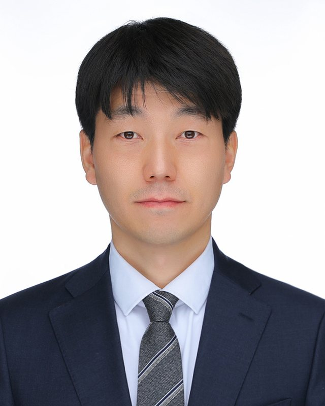
Kyongmo An안경모
Assistant Professor, Department of Physics Education, Chungbuk National University
Kyongmo started M² Lab in March 2025. Much of his research is about spin waves meeting sound and microwaves: Brillouin light scattering of magnons and phonons during his Ph.D. at UT Austin, spin-wave devices at EPFL, phonon-coupled magnets at SPINTEC in Grenoble, and hybrid magnonics at KRISS.
- 2025–Assistant Professor, Chungbuk National University
- 2021–2024Sejong Science Fellow, Korea Research Institute of Standards and Science (KRISS)
- 2019–2021Postdoctoral researcher, SPINTEC, Grenoble
- 2017–2019Marie Skłodowska-Curie Fellow, EPFL, Lausanne
- 2016Ph.D. in Physics, The University of Texas at Austin
- 2010M.S. in Physics, KAIST
- 2008B.S. in Physics, Yonsei University
Students and researchers
-
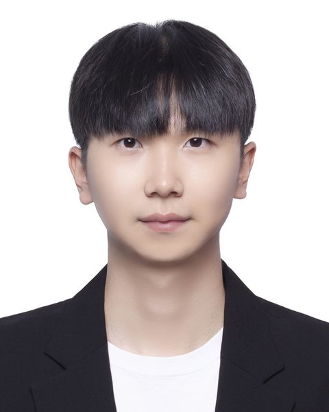
Taekyeoung An
M.S. researcher
Micromagnetic simulation
B.S., Kangwon National University
tk4214@naver.com -
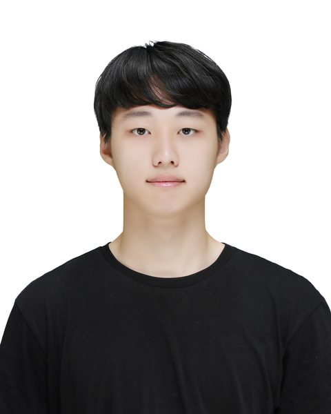
Chanwoo Shin
Undergraduate researcher
Physics education and magnonics
B.S. student, CBNU
chanwoo204@gmail.com
Each summer we also host undergraduate interns. The 2026 interns worked with us from June to August and finished the program with the whole team at the KPS Fall Meeting in Jeju.
News
-
Two undergraduate teams at the KPS Fall Meeting, Jeju
Two teams of our undergraduates presented their projects in the undergraduate physics research competition at the Korean Physical Society Fall Meeting. One team showed how hitting a steel rod over and over shifts its magnetization toward the Earth's magnetic field, measured through the rod's stray field and with MOKE imaging. The other team built simple cubic, BCC and FCC crystals by moving steel balls on a 3D-printed lattice and measured their Bragg diffraction with microwaves and a portable network analyser.
-
Ryuhei Kohno visits from Tohoku University
Ryuhei Kohno, assistant professor at Tohoku University, came to see the lab. We have worked together since our SPINTEC days and share seven papers.
-
Summer internship wraps up
Over three months, from June to August, our interns joined Friday seminars, built microwave experiments in the lab and visited the Korea Research Institute of Standards and Science (KRISS).
-
Magnetism Summer School at CBNU
Kyongmo An organized the 2026 Magnetism Summer School (자성학 여름학교), held at Chungbuk National University.
-
Lab setup complete, experiments under way
Key microwave equipment and electromagnets are installed: RF sources and analysers, lock-in measurement systems, an electromagnet, sample stages and an optical table area. Measurements are in progress.
-
2026 summer internship program begins
For three months, undergraduates join hands-on research on microwave magnonics, spin-wave devices and quantum interfaces.
-
First APS presentation for Taekyeoung An
Taekyeoung presented his poster at the APS Global Physics Summit in Denver.
-
Our first paper from M² Lab
Yunyoung Hwang, Taekyeoung An and Kyongmo An show how antenna-field design tunes spin-wave nonreciprocity, in the Journal of the Korean Physical Society.
-
New project: magnon–superconductor quantum transduction
Three-year funding (2025–2028) awarded for "Magnon-Superconductor Quantum-Transduction Devices based on Chungcheong Open-Lab Foundation".
-
M² Lab opens at CBNU
The Microwave Magnonics Lab begins operation in the Department of Physics Education at Chungbuk National University.
Conferences and lab life
Scroll sideways for more photos. Select a photo to enlarge it.
-
The lab together in Jeju, KPS Fall Meeting
-
Jeju black-pork dinner with the whole team
-
At the microwave diffraction poster
-
The microwave diffraction setup
-
Friday seminar: a student explains ferromagnetic resonance
-
A huge crystal at the Denver Museum of Nature and Science
-
Magnonics 2025 boat excursion
-
SolSkyMag conference
-
Li Lab homecoming dinner at APS
-
Trends in Magnetism, Venice
-
Spin Mechanics 7 excursion to Rothenburg
Teaching
Courses in the Department of Physics Education, where we train future physics teachers.
- Spring 2026
- Electromagnetism and EM Education I
- Mathematical Physics I
- Thermal and Statistical Physics
- Physics Experiment I
- Fall 2025
- Electromagnetism and EM Education II
- Mathematical Physics II
- Physics Experiment II
- Solid State Physics Education
- Spring 2025
- Electromagnetism and EM Education I
- Mathematical Physics I
- Thermal and Statistical Physics
Say hello
If you're interested in what we do, you can reach me at kman@cbnu.ac.kr. Students are always welcome, and you don't need any research experience.
Kyongmo An